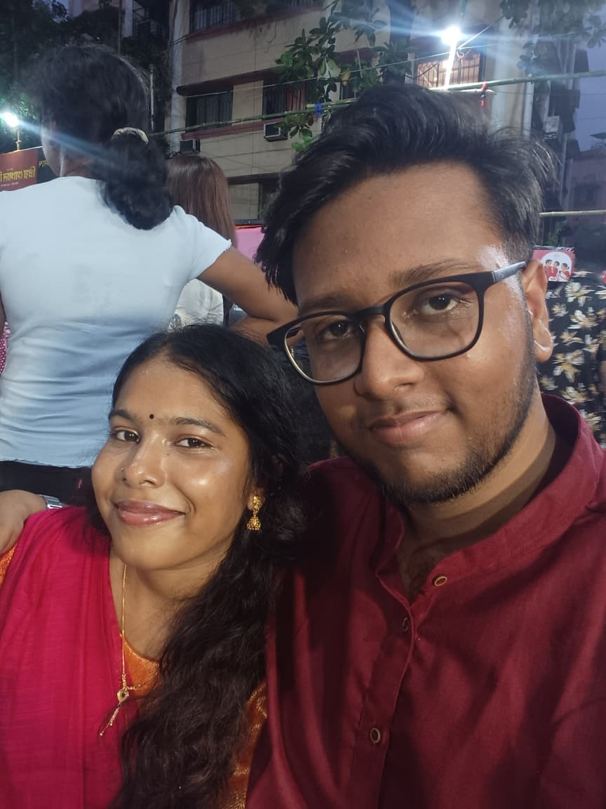
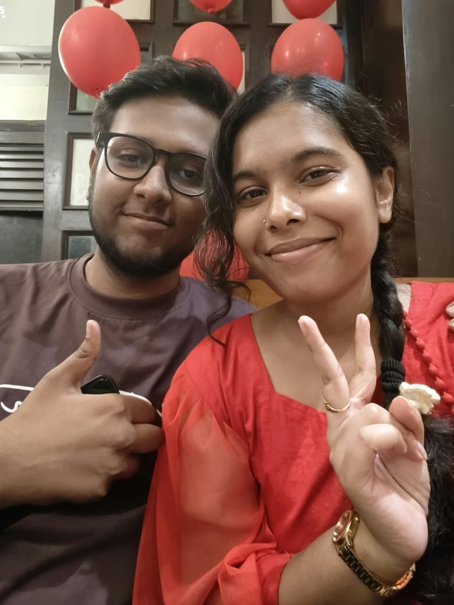

আমার প্রিয় মানুষটার জন্য
একটু শোন না,
মণি… 💗
তোকে কিছু কথা বলার ছিল। অনেক কথা মুখে বলতে পারিনি, তাই আজ লিখে ফেললাম। একটু সময় নিয়ে আমার কথাগুলো পড়বি?
শুধু তোর জন্য, মন থেকে বানানো।
আমাদের ছোট্ট পৃথিবী
কিছু মুহূর্ত,
অনেকটা ভালোবাসা
কিছু স্মৃতি ছবিতে থেকে যায়, আর কিছু স্মৃতি থেকে যায় মনের মধ্যে। তুই আমার জীবনের তেমনই একটা মানুষ।


চিঠি নং 1 · মন থেকে বলা সরি ❤️
কিছু কথা তোকে বলা বাকি ছিল…
প্রিয় মণি, 💗
জানিস, তোকে এই চিঠিটা লেখার সময় বারবার মনে হচ্ছে, কত কথা তোকে বলা উচিত ছিল, অথচ ঠিক সময়ে বলতে পারিনি।
আমি জানি, তোর জীবনের সবচেয়ে কঠিন সময়গুলোতে তোর যেভাবে যত্ন নেওয়া উচিত ছিল, যেভাবে তোকে সান্ত্বনা দেওয়া উচিত ছিল, আমি সেভাবে পারিনি। তুই যখন কষ্টে ছিলিস, তখন হয়তো তোর শুধু একটু বোঝার মানুষ দরকার ছিল। এমন একজন, যার কাছে তুই মন খুলে কাঁদতে পারবি, নিজের কষ্টগুলো বলতে পারবি, আর যে তোকে বোঝানোর চেষ্টা করবে যে তোর অনুভূতিগুলো গুরুত্বপূর্ণ।
কিন্তু আমি অনেক সময় বুঝতেই পারিনি তোর ঠিক কী দরকার ছিল। তুই চুপ করে থাকলে আমি তোর মনের কথা বুঝতে পারিনি। উল্টে নিজের ভয়, নিজের ভুল ধারণা থেকে তোকে এমন কিছু কথা বলেছি, যেগুলো তোকে আরও কষ্ট দিয়েছে।
আমি তোকে কষ্ট দিতে চাইনি, কিন্তু শুধু কষ্ট দেওয়ার ইচ্ছা ছিল না বললেই তো আমার ভুলগুলো মুছে যায় না। আমার কথায় তুই কষ্ট পেয়ে থাকলে, আমার আচরণে নিজেকে একা মনে করে থাকলে, তার জন্য আমি সত্যিই দুঃখিত।
আমি জানি, একটা “সরি” বললেই সব ঠিক হয়ে যায় না। তুই হয়তো এখনই আমাকে ক্ষমা করতে পারবি না, হয়তো আমার কথাগুলো বিশ্বাস করতেও সময় লাগবে। তবু আমি চাই, তুই জানিস—আমি আমার ভুলগুলো অস্বীকার করছি না।
আমি শুধু চাই, ভবিষ্যতে তোর কষ্টগুলো বুঝতে আরও চেষ্টা করি, তোর কথা মন দিয়ে শুনি, আর তোকে এমন অনুভব না করাই যে তোর অনুভূতিগুলোর কোনো মূল্য আমার কাছে নেই।
আমার ভুলগুলো একদিনে শুধরে ফেলতে পারব কি না জানি না, কিন্তু আমি চেষ্টা করতে চাই। শুধু তোকে হারানোর ভয়ে নয়, বরং তোকে ভালোবাসি বলেই তোর জন্য আরও ভালো একজন মানুষ হতে চাই।
পারলে আমাকে ক্ষমা করে দিস। আর সময় লাগলে সেটাও আমি বুঝব। ❤️

তোর জন্য একটা গান 🎵
এই গানটা শুধু তোর জন্য…
কিছু অনুভূতি মুখে বলা যায় না। তাই একটা গান বেছে রেখেছি তোর জন্য। ইচ্ছে হলে গানটা শুনিস। ❤️
শুধু তোর জন্য, মণি
একটা গান, অনেক অনুভূতি
নিচের Play button-এ চাপ দিলে গানটা বাজবে।
কিছু কথা গানও বলে দেয়…” 💗
চিঠি নং 2 · তোর জন্য আমার কিছু কথা
প্রিয় মণি, 🌷
তোকে নিয়ে লিখতে বসলে বুঝতে পারি, মনের মধ্যে কত কথা জমে আছে। কিন্তু সামনে এলে সেই কথাগুলোই ঠিক করে বলতে পারি না। কখনো চুপ করে যাই, কখনো ভুল কথা বলে ফেলি, আবার কখনো তোর মনের অবস্থা বুঝতে না পেরে এমন কিছু করে বসি, যা তোর খারাপ লাগে।
তুই হয়তো অনেক সময় ভেবেছিস, আমি তোকে ঠিক করে বুঝি না, তোর অনুভূতিগুলো বুঝতে পারি না। সত্যি বলতে, সব সময় পেরেও উঠিনি। কিন্তু তার মানে এই নয় যে তোকে বোঝার ইচ্ছেটা আমার নেই।
আমি চাই, তোর ভালো থাকার দিনগুলোতে যেমন তোর সঙ্গে হাসতে পারি, তেমনই তোর খারাপ থাকার দিনগুলোতেও তোর পাশে থাকার মতো মানুষ হতে পারি। তোর সব সমস্যার সমাধান আমার কাছে থাকবে না, সব প্রশ্নের উত্তরও হয়তো দিতে পারব না। কিন্তু অন্তত তোর কথা মন দিয়ে শুনতে, তোর কষ্টটাকে গুরুত্ব দিতে আর তোর অনুভূতিগুলোকে সম্মান করতে শিখতে চাই।
আমি চাই না, তুই সব সময় শক্ত থাকার চেষ্টা করিস। আমার সামনে তোর মন খারাপ হতে পারে, কান্না পেতে পারে, কোনো কথা বলতে ইচ্ছা না-ও করতে পারে। তোকে সব সময় নিজের কষ্টের ব্যাখ্যা দিতে হবে না। আমি চাই, তুই জানিস যে তোর অনুভূতিগুলো আমার কাছে গুরুত্বপূর্ণ।
আর একটা কথা—আমি চাই না শুধু সুন্দর সুন্দর কথা বলে তোকে আবার সব বিশ্বাস করিয়ে দিতে। আমি চাই, আমার ছোট ছোট কাজের মধ্য দিয়ে তুই নিজেই বুঝতে পারিস যে আমি চেষ্টা করছি। তোর খোঁজ নেওয়া, তোর কথা মনে রাখা, তোর কথা মন দিয়ে শোনা—এই ছোট ছোট জিনিসগুলোতেই যেন তুই আমার যত্নটা অনুভব করতে পারিস।
আমাদের মধ্যে রাগ হবে, অভিমান হবে, ভুল বোঝাবুঝিও হতে পারে। কিন্তু আমি চাই, আমরা দুজনেই যেন একে অপরের কথা শোনার আর বোঝার সুযোগ দিই। আমি আমার ভুলগুলো শুধরাতে চাই, আর তোর কাছ থেকেও আমাদের সম্পর্কটা নিয়ে খোলাখুলি কথা বলতে চাই।
তুই আমার জীবনে গুরুত্বপূর্ণ, মণি। আর তোকে ভালোবাসি বলেই শুধু তোকে নিজের কাছে রাখতে চাই না—তোর অনুভূতি, তোর ইচ্ছা আর তোর নিজের মতো করে থাকার জায়গাটাকেও সম্মান করতে চাই।
আমি জানি না, এই চিঠিটা পড়ে তোর ঠিক কেমন লাগবে। শুধু চাই, তুই আমার কথাগুলোকে একটা প্রতিশ্রুতি হিসেবে নয়, বরং আমার চেষ্টা শুরু করার জায়গা হিসেবে দেখিস।
শেষ পাতায়, মনের কথা ❤️
মণি, আমাকে কি একটুখানি ক্ষমা করতে পারবি?
তোকে এই কথাগুলো বলার জন্যই এত কিছু লিখলাম। আমি জানি, শুধু একটা website বানিয়ে বা সুন্দর কিছু কথা লিখে সব ভুল ঠিক করে ফেলা যায় না।
আমি চাই, তুই ভালো থাকিস, নিজের মনের কথাগুলো বলতে পারিস, আর কখনো যেন মনে না হয় যে তোর অনুভূতিগুলোকে কেউ গুরুত্ব দিচ্ছে না।
আমি আমার ভুলগুলো শুধরানোর চেষ্টা করব। তোর কথা শুনব, তোকে বোঝার চেষ্টা করব, আর নিজের কাজের মাধ্যমেও আমার যত্নটা দেখাতে চাই।
তোকে এখনই আমাকে ক্ষমা করতে হবে না। সময় লাগলে আমি সেটা বুঝব। তোর অনুভূতিগুলো আমার কাছে গুরুত্বপূর্ণ।
ভালো থাকিস, মণি। আর নিজের খেয়াল রাখিস। 🥹❤️
কোনও তাড়া নেই, মণি। তোর অনুভূতিগুলো আমার কাছে গুরুত্বপূর্ণ। ❤️